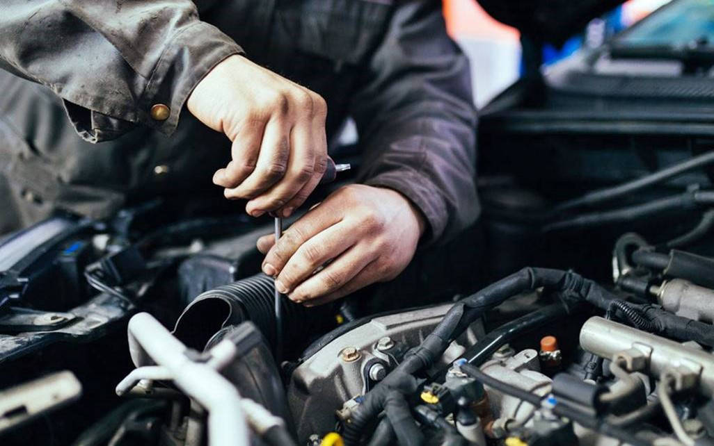

MANTENIMIENTO
El mantenimiento del automóvil se realiza cada 6 meses o acorde o a las especificaciones del fabricante. Realizamos cambio de aceite, cambio de filtro de aceite, cambio de filtro de nafta, cambio de filtro de aire, control de líquido de freno, control de agua y control de líquido hidráulico.